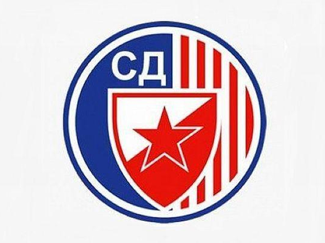

Спортско друштво Црвена звезда из Београда је спортско друштво које обухвата велики број клубова који се такмиче у одређеним спортским дисциплинама. Клубови Црвене звезде су освојили 667 трофејa.

Од тога 649 титула националног шампиона, националног купа или суперкупа, 8 титула европског првака, 7 титула регионалног шампиона и 3 титуле светског првака. Црвена звезда је најуспешније спортско друштво у Србији.
Навијачи СД Црвена звезда називају се Делије север. Навијачка група је основана 1989. године. У оквиру спортског друштва постоје готово сви спортови, али најпознатији је ФК Црвена звезда. Црвена звезда је основана 4. марта 1945. године у једној малој сали у Делиградској улици у Београду. Оснивачи клуба су говорили да се дуго већало око имена друштва, али се већина слаже да су "кумови" били Слободан Ћосић и Зоран Жујовић. Ћосић је предлагао име Звезда, а Жујовић је спонтано додао: "Ако је Звезда нека буде црвена". Међу оснивачима су такође били: Светозар Глигорић, Небојша Поповић, Мира Петровић и Милован Ћирић. Од првобитног фискултурног клуба са бројним секцијама, Црвена звезда је прерасла у спортско друштво које обухвата клубове у скоро свим спортским гранама.

Истовремено са оснивањем, друштво је почело да делује у осам секција: лако-атлетска, веслачка, кошаркашка, одбојкашка, фудбалска, шаховска, стонотениска и пливачка. Тог првог пролећа, у тих 8 секција, Звездин грб носило је око 350 спортиста. Многи од њих су били руководиоци и спортисти у исто време. Годину дана касније, Црвена звезда се спаја са фискултурним друштвом "Студент" и постаје Омладинско-студентско фискултурно друштво Црвена звезда. 1948. године секције друштва прерастају у клубове, а већ наредне 1949. године асоцијација тих клубова прераста у Спортско-друштво Црвена звезда. Убрзо се формирају и многи други клубови. Међутим, долази период прве велике кризе Спортског друштва у целини, крајем педесетих и почетком шездесетих. Спортско друштво је постојало само на папиру. Једини клубови који су и тада чврсто били у врху домаћег спорта, и били шампиони, били су фудбалери и кошаркашице. Ипак, 1963. године група старих звездаша покреће иницијативу да се обнови рад Спортског друштва. За председника се бира Мирко Поповић, али су и многе друге личности из јавног живота биле у врху руководства. Убрзо са консолидацијом друштва долази до ревитализације клубова и успостављања система рада у њима.
Од круцијалног значаја како за Фудбалски клуб, тако и за читаво друштво, била је изградња новог стадиона. Спортско друштво је лагано расло као и сви клубови у њему, да би почетком седамдесетих до успеха долазило као на траци. Почетак седамдесетих је означен као "први златни период" спортског друштва. Илустрације ради: у 1972. години СД Црвена звезда је у сениорској конкуренцији имала 12 екипних шампиона Југославије, 6 победника Купа, кошаркашки победници Купа победника Купова Европе, а 4 екипе играле су у полуфиналу Купа европских шампиона. У јуниорској конкуренцији, такође је те године остварено безброј шампиона екипно и појединачно. У већини спортова, те oлимпијске 1972. године репрезентативци су били из Црвене звезде. "Други златни период" за спортско друштво десио се осамдесетих и почетком деведесетих. Поред великог броја домаћих титула, Црвена звезда постаје још битнија на читавом континенту. Прво кошаркашице долазе до титуле Шампиона Европе, затим титулу првака Европе освајају атлетичари, а након тога и фудбалери поред титуле првака Европе придодају и Интерконтинентални куп - трофеј намењен најбољем клубу на свету. Поред екипних, дошло је и до индивидуалних успеха: тенисер Боба Живојиновић се пробио у сам светски врх; за апсолутно и званично најбољу на планети проглашена је Јасна Шекарић; Драгутин Топић постаје европски шампион и јуниорски рекордер. 2015. године Кошаркашки клуб освајањем титуле првака Србије долази до 600. трофеја у историји спортског друштва.